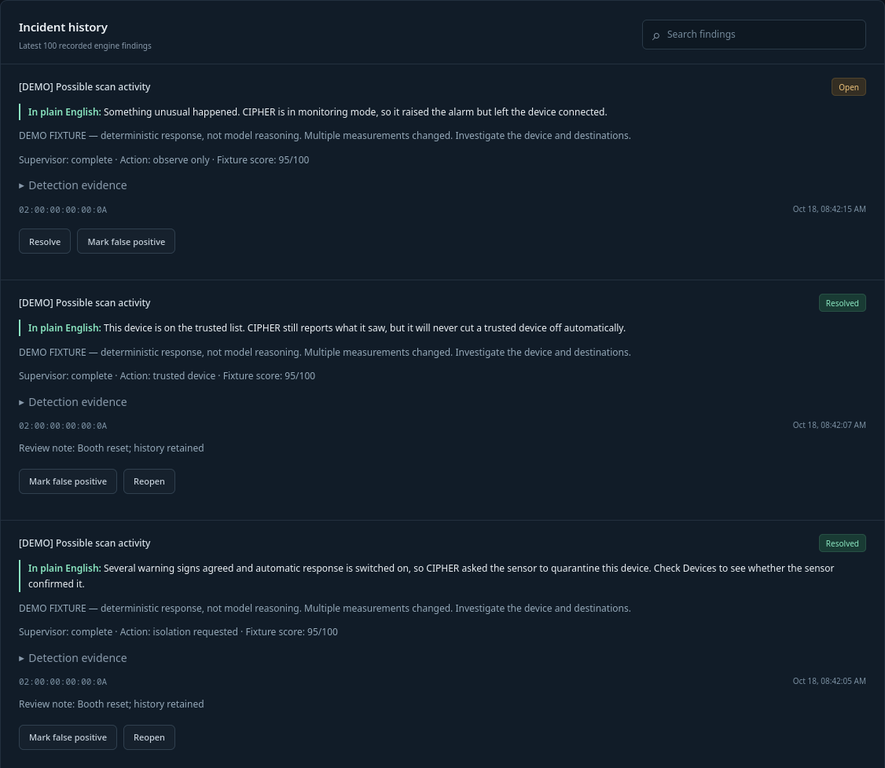

A security guard for the office network.
CIPHER learns each device's normal routine, notices when one behaves strangely, explains why in plain English, and quarantines that device only when you allow it to.
Built by The Four Horsemen for small offices, clinics, schools and shops: places with a router and no full-time security team.
How it works
Four steps, from a packet to a decision
- 01 · Watch
Measure at the router
A small eBPF program inside the router's Linux kernel counts and measures traffic. It never reads contents.
- 02 · Learn
Know what's normal
For every device, CIPHER builds a baseline of downloads, uploads, blocked attempts and port variety.
- 03 · Explain
Ask for a second opinion
When a report is far from normal, an AI reviewer reads the numbers and explains them in plain language.
- 04 · Respond
Quarantine one device
Only if every safety rule passes, and only after the router confirms it, is the device blocked. Everything else keeps working.
Try it
The quarantine gate
The AI can't block anything by itself. Flip the switches to see what CIPHER does. This is the same rule the server runs.
CIPHER's decision
Quarantine requested
In plain English: Several warning signs agreed.
server action: isolation_requested
The operator's view
Every alert starts in plain English

At the booth · about 3 minutes
The guided tour
Run python3 scripts/booth.py tour. Each step runs the scenario and prints what to say.
| Step | What happens | What to say |
|---|---|---|
| 1 · Meet | One office computer, baseline learned, monitoring mode | CIPHER has learned this computer's normal routine. |
| 2 · Scan | Hundreds of blocked attempts across many ports | It raised the alarm but didn't disconnect anyone. |
| 3 · Act | Automatic mode on, same scan, device quarantined once the sensor confirms | Several warning signs agreed, so it quarantined just this device. |
| 4 · Trust | Device marked trusted, scan again | Still reported, never cut off automatically. |
| 5 · Outage | AI reviewer offline, scan again | The alarm still works, and nobody is blocked on a guess. |
| 6 · Reset | Back to monitoring, history kept | Ready for the next visitor. |
Where we are
What's real, what's simulated, what's next
Working software
- Rust control plane with signed-in dashboard
- Per-device baselines and statistical detection
- Monitor and automatic modes, trust, manual override
- Claude, OpenAI or local Ollama models as reviewer
- Command confirmations, outage handling, reconnect replay
- eBPF/XDP sensor compiles; durable report queue tested
Simulated at the booth
- The office computer and its traffic
- The sensor's confirmations (no real packets blocked)
- AI answers, unless the real model is switched on
Next
- Rehearsal on a real gateway with packet-level blocking
- Accuracy measured against representative attacks
- Per-sensor credentials and stronger device identity